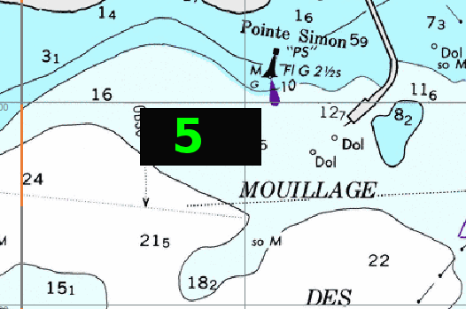

Use the F6 key for dimming and SHIFT + F6 to reverse the dimming.
This is not connected to a chart feature, and dims the whole display, not just OpenCPN.
“CTRL + G” cycles through (monochromatic) green, red and normal screen. The color change applies to the whole screen as well.
“Ctrl + G” may not work on some Windows systems, depending upon the graphics driver implemented.
When pressing F6 the word “MAX” appears on the screen in the NW part. Press again and the screen gets a bit dimmer and “MAX” is replaced by a “9” and so on.

“Print Screen” refuses to catch the dimming!!
Mac OS X users can easily adjust the screen brightness with the F1 and F2 keys.
This Button has 4 levels corresponding to standard US raster charts built in levels. You can cycle through the levels also by pressing the F5 key.
These represent the Default level, the Daylight level, the Dawn or Dusk level, and finally the Night level.
Often there is no difference between the Default level and the Daylight level.
The way this button works differs between different categories of charts.
All charts display the Dawn/Dusk and Night levels. This means that there is no change when the button is first pressed, but further pressing brings up a Dusk and then a Night palette.
These are generally coded with all the levels. The Daylight level has slightly sharper colors for better daylight viewing.
Most other raster charts just contains a standard palette, and pressing the Button has no effect other than dimming part of OpenCPN, except for the chart display.
The Brazilian Raster Charts include a Dusk and Night palette, but the colors displayed are not what one would expect.
Charts converted with the help of tiff2bsb or imgkap, normally only contain the default color scheme.